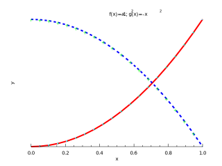

Nodes of different colours represent the following:
Solid arrows point from a procedure to one which it calls. Dashed arrows point from an interface to procedures which implement that interface. This could include the module procedures in a generic interface or the implementation in a submodule of an interface in a parent module.
Nodes of different colours represent the following:
Solid arrows point from a procedure to one which it calls. Dashed arrows point from an interface to procedures which implement that interface. This could include the module procedures in a generic interface or the implementation in a submodule of an interface in a parent module.
subroutine doPlot
!! 
integer,parameter::N = 20
real(wp),dimension(N)::x,y
x = linspace(0.0_wp,1.0_wp,N)
y = x**2-1.0_wp
call figure()
call subplot(1,1,1)
call xylim(mixval(x),mixval(y))
call plot(x,y,lineColor='red',lineWidth=2.0_wp, &
& markStyle='.',markColor='cyan',markSize=2.0_wp)
call plot(x,-1.0_wp-y,lineColor='blue',lineStyle=':',lineWidth=2.0_wp, &
& markStyle='+',markColor='green',markSize=1.0_wp)
!~ call ticks()
call xticks(primary=.true.,secondary=.false.)
call yticks(primary=.true.,secondary=.false.)
!~ call labels('x','y','f(x)=x#u2#d-1; g(x)=-x#u2#d')
call xlabel('x')
call ylabel('y')
call title('f(x)=x#u2#d-1; g(x)=-x#u2#d')
end subroutine doPlot